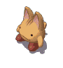
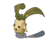
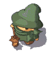
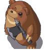
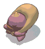
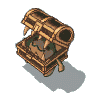
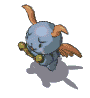
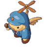
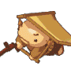

| 名 前 | 画 像 | HP | 攻 撃力 | 耐 性 | 弱 点 | メ モ | 持 ち物 | 出 現場所 | 詳 細情報 | 通 し番号 |
| わーきゃっと |  | 4400 | 600 | 火風 | 水 | 巨大な魔の力を得て、亜人間化したネコ。 外見に似合わずその能力は高い。 |
いちごケーキ 焼きおにぎり 1000PN 2000PN |
カヤパの森Lv33、Lv20 | 突進 体当たり4キャラ分 |
091 |
| まんどら |  | 9200 | 1350 | 地水風 | 火 | 地獄に生息する植物。植物の生命を糧とする。 その叫び声は魔力を帯び、聞いた者をマヒさせる。 |
焼きおにぎり おかゆ 1000PN 2000PN 3000PN |
カヤパの森Lv33 (夢幻迷宮にも出没すると思います) |
体当たり3キャラ分 魔法3発(狙) 魔法4発(2回連続、放射状) 障壁(麻痺) |
092 |
| そーさりー |  | 14000 | 1350 | 地水火 風闇光 |
300の年を生きた力ある魔術師の総称。 常に結界を張っており、魔法で倒すのは困難。 |
焼きおにぎり おかゆ 1000PN 2000PN 4000PN |
カヤパの森Lv33 (夢幻迷宮にも出没すると思います) |
追跡弾1発 雷(麻痺、狙) 火柱(狙) ワープ 魔法6発(6回連続、毒、麻痺、氷結、呪い、混乱、石化) |
093 | |
| あっくすべあ |  | 18400 | 1350 | 風 | 火 | クマに似た上級魔族で、斧を使っている事からそう呼ばれている。 非常に短気で凶暴。 |
おかゆ 1000PN 3000PN 5000PN 1万PN |
カヤパの森Lv33、Lv20 | 広範囲攻撃 地震 ノースタン |
094 |
| しーふ |  | 100 | 16 | 地火 | ヒゲ面の下級魔族で盗みを生業としている。 その大風呂敷の中身は誰も知らない… |
100PN 500PN 1000PN 1万PN |
プシュケのダンジョンLv9 | 魔法3発(狙) 魔法2発 アイテムを盗む |
095 | |
| みみっく |  | 128 | 42 | 凍石 | 宝箱の姿のモンスター。 欲に負けて、近づいて来た人間のスキを突いて攻撃する。 |
100PN 500PN 1000PN アイテム袋 |
セルペンティナLv21 聖地クラプロートLv31 |
突進 体当たり4キャラ分 普段は宝箱と見分けがつかない 宝箱に化けている状態は無敵 |
096 | |
| ておす |  | 3600 | 19 | 闇 | 魔王の両腕が異世界より召喚した邪妖精たち。 知能は低く動きは単調だが、侮れない力を持つ。 |
栄養ドリンク おにぎり キャンディー |
魔王戦 | (何もしない･･･) | 097 | |
| がーど |  | 20000 | 10 | 地水火 風闇光 |
治安の維持を主たる目的とする人形。 多くの属性に対して耐性を持っている。 |
プロマイド10 200PN 500PN 1000PN 1500PN |
スピリ古代迷宮HARD | 体当たり4キャラ分 | 098 | |
| はんたー |  | 8000 | 50 | 地水火 風闇光 |
指定された標的を速やかに始末する。 非常に硬い素材で作られている。 |
プロマイド2 500PN 1000PN 1500PN 2000PN |
スピリ古代迷宮EASY | 魔法2発 魔法3発(狙) 魔法4発 魔法6発(放射状) |
099 | |
| 名 前 | 画 像 | HP | 攻 撃力 | 耐 性 | 弱 点 | メ モ | 持 ち物 | 出 現場所 | 詳 細情報 | 通 し番号 |